Sunday, February 10 2008
| The weather forecast was for mid-50's and
sunny, and Eric had been sans-climbing partner for several weeks so I
gamely agreed to accompany him on a trip to the Wichita Mountains Wildlife
Refuge. He promised there would only be a little climbing and that
we would mostly hike and have a picnic. Well, as it turned out, the
temps were in the low 40's and the wind was blowing about 40 as
well. We made the most of it, had a great hike, and found a spot out
of the wind to spend a few hours. Eric discovered a new climbing
area as well so he was thrilled with our day. |
|
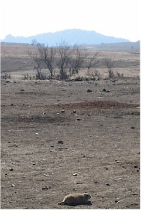 |
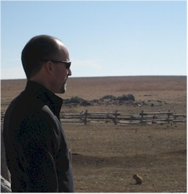 Eric, thinking deep thoughts as he surveys the prairie. |
| When I'm along, we always have to stop at the Prairie Dog area. I love to hear them and watch the antics of these over-fed critters. |
|
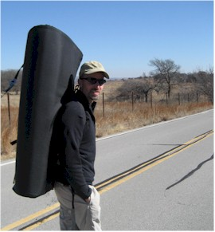 |
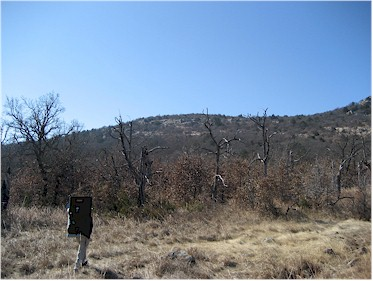 |
| Have crash pad, will travel.
|
The Wichita Mtns are well known for their many well-maintained hiking trails. However, our approach was for Eric to choose a spot on a hill and say, "Let's go there!" It was so much more interesting than following a silly old trail. |
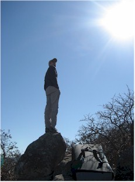 |
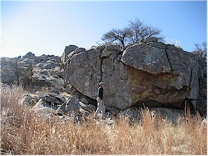 |
| Eric, trying to find the least-brushy path ahead. | And here we are at the top. His first find was this boulder where he could warm up his climbing muscles. |
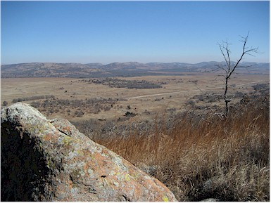 |
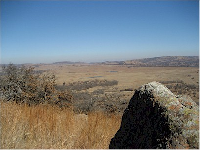 |
|
Scenes from the top. |
|
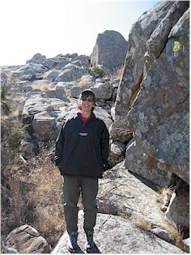 |
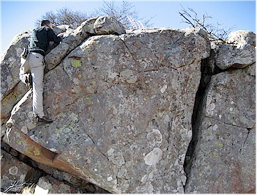 |
| Hiker-Shawnna, leaning a bit in the wind. | Eric did laps on this boulder for awhile. |
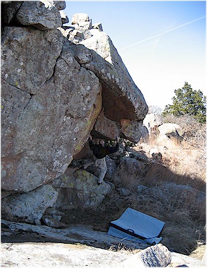 |
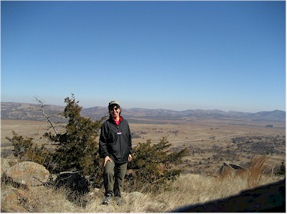 |
| Practicing the overhang moves. |
Watching Eric is enthralling, but eventually I went off for my own hike. Here I used the timer on the camera to capture the moment. |
|
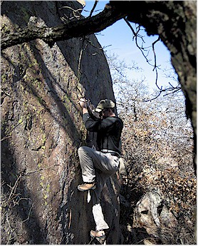 |
Later Eric found another new climbing area. This is him doing one of the routes. I also have video but we'll save that for another day. |